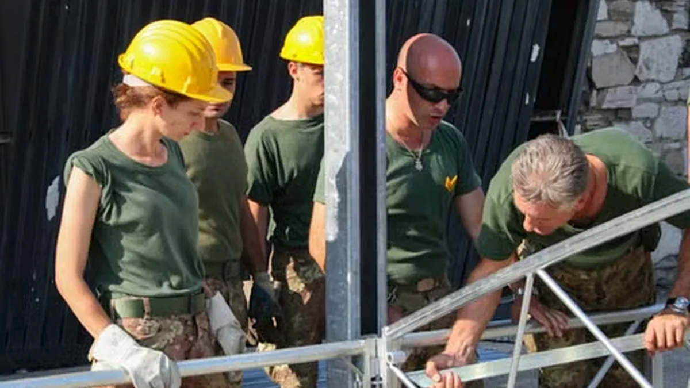
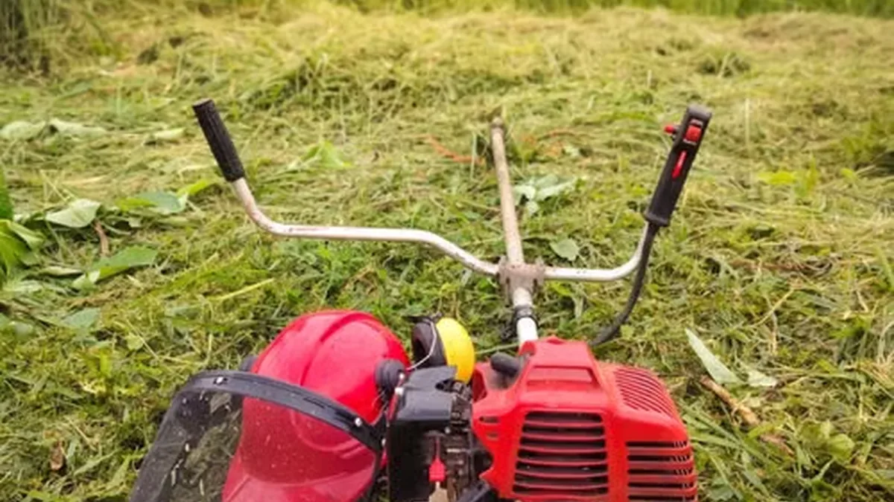
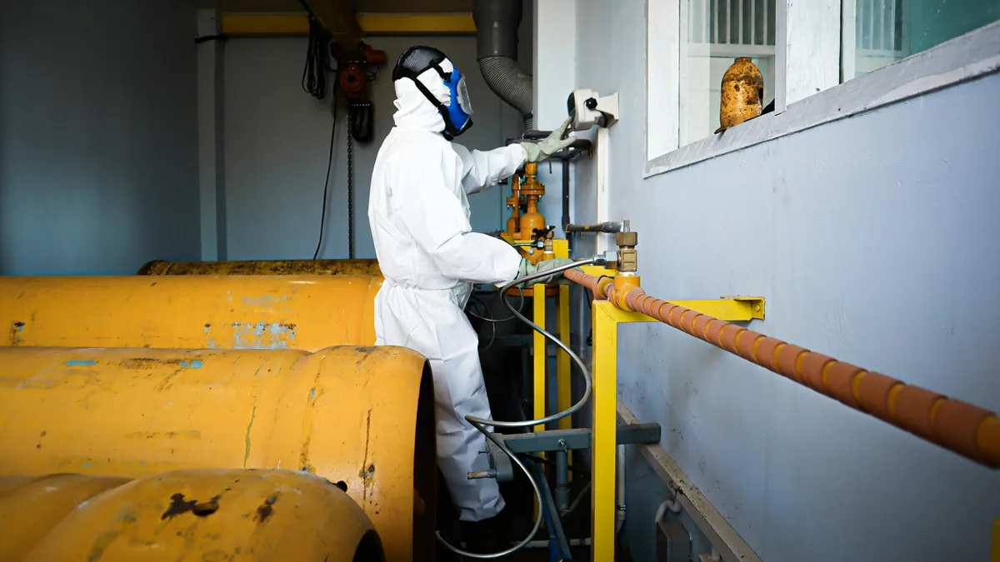
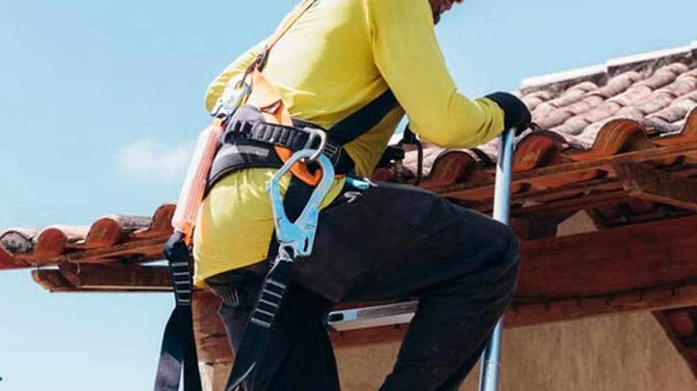
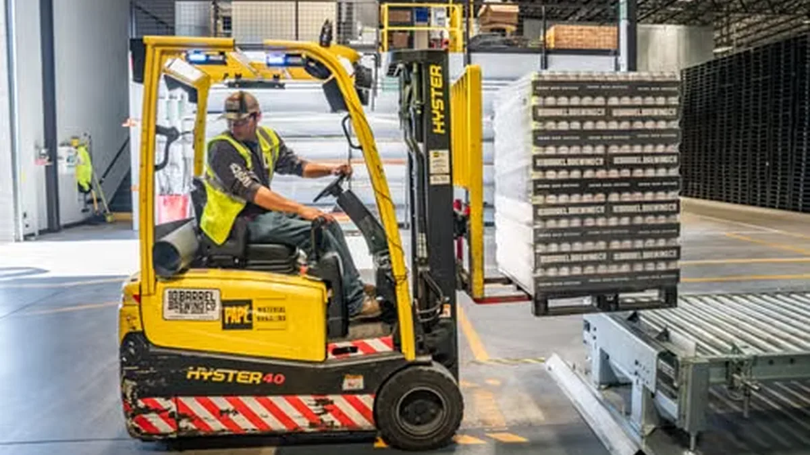

What Is a WorkSafeBC Safety Plan (and Who Actually Needs One)?
Learn what a WorkSafeBC safety plan must include, who needs one, and how to tell if your written program is adequate before an...
Practical, no-nonsense articles on WorkSafeBC compliance, COR certification, safety plan costs, inspections, and more. Written by certified consultants who work in the field.
Learn what a WorkSafeBC safety plan must include, who needs one, and how to tell if your written program is adequate before an...
COR certification in BC requires a written safety program, internal audit, and external audit. Learn what it costs, how long it...
A practical guide to WorkSafeBC inspections: what inspectors check, which records to have ready, and how to reduce the risk of...
A safety plan template can help you start, but inspections test whether the program matches your work. Compare templates and custom...
Explore the nine core elements of a WorkSafeBC health and safety program, from hazard assessment and training to inspections,...

BC employers must orient new and young workers before work starts. Learn what to cover, what to document, and how to prove...
What affects the cost of a custom WorkSafeBC safety plan in BC? See typical cost ranges, what is included, and how to avoid paying...

Win more bids with the right safety documentation. Learn which safety plans, stats, certificates, and subcontractor records BC...
WorkSafeBC can issue orders, penalties, and stop-work directions under the Workers Compensation Act. Learn common triggers and how...

Before spring work starts, landscaping crews need documented training, equipment checks, and site procedures. Use this BC safety...

Confined space entry in BC requires hazard assessment, written procedures, training, atmospheric testing, and rescue planning....

BC construction employers need a fall protection plan when workers face fall hazards. Learn when it applies, what it must include,...
BC employers with 20 or more workers need a Joint Health and Safety Committee. Learn membership, training, meeting frequency, and...
After a workplace incident, BC employers must investigate and document root causes and corrective actions. Learn what WorkSafeBC...

Build a WorkSafeBC-aligned warehouse safety program covering forklifts, pedestrian traffic, racking, ergonomics, lockout, training,...
How often should a BC safety plan be updated? Learn the review schedule, events that trigger updates, and records to keep when your...
The hierarchy of controls helps BC employers reduce workplace hazards effectively. Learn elimination, substitution, engineering,...
Mental health belongs in your BC safety program. Learn how hazard assessment, policies, training, and response procedures can...
Managing contractors on multi-employer BC worksites takes clear responsibilities, documented orientations, and coordinated hazard...

Prepare for a safety plan audit with the right records, worker training, inspection history, and corrective actions. See what...
We write WorkSafeBC-aligned safety plans from scratch. Fixed-fee. No templates. Free consultation.
Get a Free Consultation